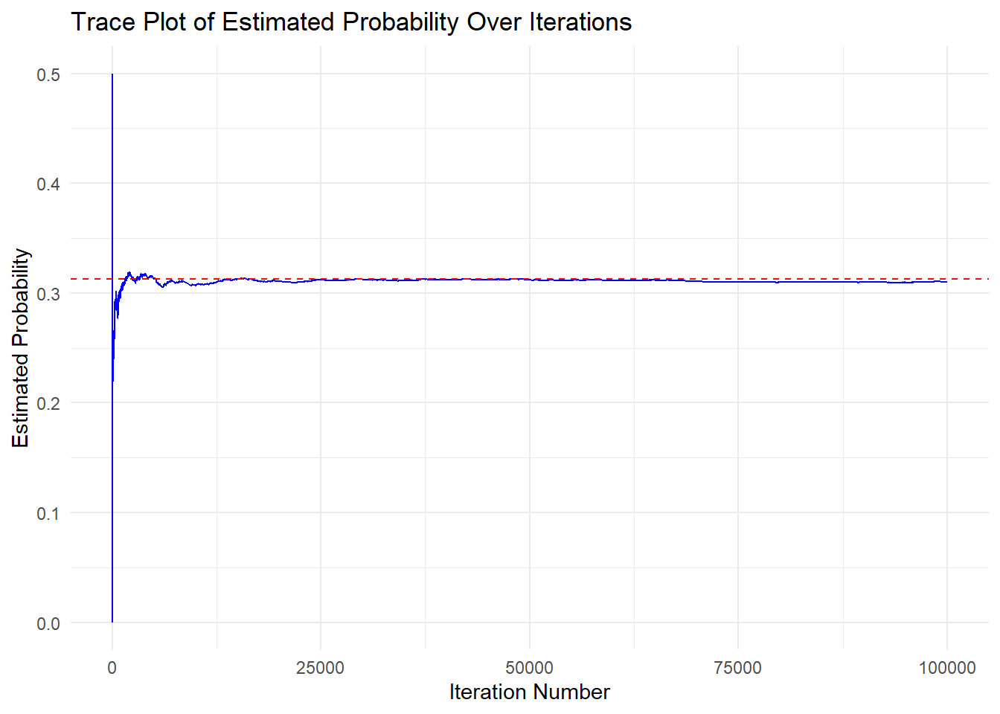

Performance Measures
Now that we understand Monte Carlo simulation, how can we evaluate how close our Monte Carlo estimates are to the true parameter value? To do this, we can use numerical techniques called Performance Measures.
Performance measures are calculations used to assess how well our simulation method estimates the parameter of interest (Morris, White, and Crowther 2019)
There are various ways to evaluate the accuracy of a Monte Carlo simulation. However, the choice of method depends on the aim of the simulation and the parameter being estimated.
Convergence
One measure that we have already encountered, without explicitly mentioning it, is convergence! Convergence tells us how quickly our estimate stabilizes at a value close to or equivalent to the true parameter.
This can be assessed using a trace plot. If the estimate stabilizes after a relatively small number of iterations, this suggests the method/estimator is producing stable estimates with fewer iterations.
Let’s take a look again at the trace plot from our coin flip example:
# Simulate flipping a fair coin 5 times and count how often the sum of heads equals 3
set.seed(123) # Set seed for reproducibility
# Establish variables prior to simulation
count <- 0 # Initialize count variable
iter <- 100000 # Number of iterations for the simulation
save.sum <- numeric(iter) # Numeric vector to store flip results
results <- numeric(iter) # Numeric vector to store cumulative parameter estimate
# Loop through a specified number of iterations
for(n in 1:iter) {
# Generate a sample of 5 values (either 0 or 1), then sum them
save.sum[n] <- sum(sample(c(0,1), 5, replace = TRUE))
# Check if the sum of the sampled values equals 3
if(save.sum[n] == 3){
count = count + 1 # Increment the count if condition is met
}
# Compute the cumulative proportion of times
# the sum was 3 up to the current iteration
results[n] <- count / n
}
# Convert results into a data frame for plotting
trace_data <- data.frame(
Iteration = 1:iter,
ProbabilityEstimate = results
)
# Create a line plot using ggplot2
ggplot(trace_data, aes(x = Iteration, y = ProbabilityEstimate)) +
# Add a blue line to represent probability estimates over iterations
geom_line(color = "blue") +
# Add a horizontal dashed red line at y = 0.3125,
# the true probability of filling 3 heads in 5 flips
geom_hline(yintercept = 0.3125, linetype = "dashed", color = "red") +
labs(
title = "Trace Plot of Estimated Probability Over Iterations", # Plot Title
x = "Iteration Number", # x-axis label for the x-axis
y = "Estimated Probability" # y-axis label
) +
theme_minimal() #ggplot2 minimal theme for clean appearance
From the plot, we can see that our estimate appears to stabilize around 10,000 iterations, suggesting that the method produces stable estimates of the true probability of flipping exactly 3 heads in 5 coin flips.
In addition to observing the rate at which an estimate converges to its true value, mathematical measures can also be calculated to assess how well our simulation is performing. The following performance measures and syntax are referenced from the rsimsum package, which we will use to verify our simulations (Gasparini 2018).
For the explanations of the different performance measures, the following notation will be used:
- \(\theta\) : the true population parameter, what we are trying to estimate.
- \(\hat{\theta_i}\) : the estimated value of \(\theta\), for the \(ith\) iteration of the simulation
- \(n_{sim}\) : the number of simulations
- \(i = 1, . . . , n_{sim}\) : the index of the current iteration
Bias
Bias measures the difference between the Monte Carlo Estimatea and the true parameter. It is calculated as the average difference between each estimate and the true parameter value (i.e., summing all differences and dividing by the number of iterations).
\[ \text{Bias} = \frac{1}{n_{sim}}\sum^{n_{sim}}_{i=1} ( \hat{\theta_i} - \theta) \] (Gasparini 2024)
We want the bias to be zero or close to zero, as that indicates that our estimate is accurately capturing the true parameter. Bias can be interpreted as follows:
\[ \begin{aligned} \text{Bias} & \approx 0 \to \text{unbiased} \\ \text{Bias} & > 0 \to \text{Biased, Overestimated} \\ \text{Bias} & < 0 \to \text{Biased, Underestimated} \end{aligned} \]
Relative Bias
Relative bias measures how much the Monte Carlo estimate differs relative to the true parameter value. While bias provides the absolute difference between the estimate and the true parameter, relative bias expresses this difference as a proportion of the true parameter value.
\[ \text{Relative Bias} = \frac{1}{n_{sim}}\sum^{n_{sim}}_{i=1} \bigg(\frac{\hat{\theta_i} - \theta}{\theta} \bigg) \]
Empirical Standard Error (Empirical SE)
The empirical standard error is the empirical standard deviation of the estimates across all simulation iterations. This tells us, on average, how much the Monte Carlo estimates differ from their mean (by summing all the Monte Carlo estimates and dividing by the number of iterations).
\[ \text{Empirical Standard Error} = \sqrt{\frac{1}{n_{sim} - 1} \sum^{n_{sim}}_{i=1} (\hat{\theta_i} - \bar{\theta})^2 } \]
The term empirical standard deviation generally refers to the standard deviation computed from observed or sampled data, estimating the population standard deviation. The simulation is drawing a finite number of parameter estimates from a theoretical infinite population of estimates. Since we have a sample, we calculate the empirical standard deviation of the estimates, which is used to approximate the variability of an estimator across repeated samples.
Model-Based Standard Error (Model SE)
The Model-Based Standard Error (Model SE) represents the expected variability of an estimator, computed as the average of the estimated standard errors across multiple simulation iterations. In each iteration of a Monte Carlo simulation, we obtain an estimate of the parameter of interest along with an estimated standard error, often derived from a statistical model (e.g., based on likelihood methods or asymptotic approximations). The Model SE is then calculated as the square root of the average of these estimated variances. It essentially reflects how much uncertainty the model predicts for each estimate within a single simulation run.
\[ \text{Model SE} = \sqrt{\frac{1}{n_{sim}}\sum^{n_{sim}}_{i=1} \widehat{\text{Var}}(\hat\theta_i)} \]
Where \(\widehat{\text{Var}}(\hat\theta_i)\) is the estimated variance of the estimator \(\theta\) for the \(ith\) iteration of the simulation.
In contrast, the Empirical Standard Error (Empirical SE) measures the actual observed variability of the estimates across all Monte Carlo iterations. It is computed as the standard deviation of the simulated estimates. While Model SE is derived from model-based assumptions at the iteration level, Empirical SE reflects the true variability of the estimator across repeated simulations.
Ideally we would like both the Empirical and Model-based SEs to be low, as this indicates that either the estimates from each simulation replication have small variation to the overall mean across simulation repetitions, or the individual standard errors from each simulation iteration are small.
Relative % error in model SE
The Relative % Error in Model SE quantifies how much the model-based estimate of standard error deviates from the actual observed variation in estimates. If the relative error is small, it suggests that the model’s standard error assumptions align well with reality. However, a large discrepancy (positive or negative) may indicate issues with model misspecification, biased estimators, or incorrect variance assumptions in the statistical model used for inference.
\[ \text{Relative % error in Model SE} = 100 \bigg(\frac{\text{Model SE}}{\text{Empirical SE}} - 1\bigg) \]
Mean Squared Error (MSE)
The Mean Squared Error (MSE) is the average squared differences between the Monte Carlo estimate and the true parameter value (Rossi 2022).
\[ \text{MSE} = \frac{1}{n_{sim}}\sum^{n_{sim}}_{i=1} (\hat{\theta_i} - \theta)^2 \]
The MSE combines both the Bias and the variance of the estimator (Rossi 2022).
\[ \text{MSE}(\hat\theta) = \text{Bias}(\hat\theta, \theta)^2 + \text{Var}(\hat\theta) \] In the event that our estimator is unbiased (i.e., bias = 0), the MSE would be equal to the variance.
Coverage
Coverage is the probability that a confidence interval will contain the true parameter, \(\theta\) (Morris, White, and Crowther 2019; Gasparini 2024). In a 95% confidence interval for \(\hat\theta\), we expect that 95% of all confidence intervals constructed from our estimates will contain the true parameter, \(\theta\).
A confidence interval provides a range within which the true parameter is expected to fall in with a given probability. Thus, coverage gives the probability that a confidence interval from each simulation iteration contains the true parameter \(\theta\).
\[ \text{Coverage} = \frac{1}{n_{sim}}\sum^{n_{sim}}_{i=1}I(\hat\theta_{i,low} \le \theta \le \hat\theta_{i,upp}) \] (Gasparini 2024)
A confidence interval is calculated for each iteration of the simulation, where \(\hat\theta_{i,low}\), and \(\hat\theta_{i,upp}\), represent the lower and upper bounds of the \(ith\) confidence interval.
\(I(\cdot)\) is an indicator function that returns 1 if the condition inside it is true (i.e., if \(\theta\) is within \(\hat\theta_{i,low}\), and \(\hat\theta_{i,upp}\)), and returns 0 if the condition is false (i.e., \(\theta\) falls outside the interval)
Thus, coverage represents the probability that \(\theta\) is captured within a confidence interval across simulation iterations.
Bias-eliminated coverage
The bias-eliminated coverage calculates how often the confidence intervals contain the average estimate \(\bar{\theta}\) instead of the true parameter \(\theta\). If our estimate is considered bias, using \(\bar{\theta}\) rather than \(\theta\) eliminates its impact on the coverage calculation (Morris, White, and Crowther 2019; Gasparini 2024).
\[ \text{Bias-eliminated coverage} = \frac{1}{n_{sim}}\sum^{n_{sim}}_{i=1}I(\hat\theta_{i,low} \le \bar\theta \le \hat\theta_{i,upp}) \]
Power
Power is a key performance measure in Monte Carlo simulations, ensuring that our tests detect true effects with high probability. It measures the probability of correctly rejecting the null hypothesis (H0) when the alternative hypothesis (Ha) is true. In other words, power quantifies how effective a statistical test is at detecting a real effect when one exists. If power is too low, we may need to increase the sample size or improve the efficiency of our estimator to avoid missing important findings. Conversely, very high power may indicate that the test is too sensitive, potentially detecting trivial effects.
\[ \text{Power} = \frac{1}{n_{sim}} \sum^{n_{sim}}_{i=1} I\bigg[| \hat\theta_i | \ge z_{\alpha/2} \times \sqrt{\widehat{Var}(\hat\theta_i)} \bigg] \]
Example
Let’s revisit our first example, where we were interested in flipping exactly 3 heads in 5 tosses of a fair coin. We previously established that the theoretical probability of this event is 0.3125. Let’s explore the performance measures of this simulation using the rsimsum package (Gasparini 2018).
In this package we will be using the simsum() function. This function computed the performance measures.
The simsum() function computes the performance measures. It requires a data.frame in tidy format (data), the variable name containing the estimates (estvarname), and the true parameter value, which is used to calculate bias, relative bias, coverage, and mean squared error (Morris, White, and Crowther 2019; Gasparini 2018). Additionally, this function can take on an se parameter, which is the variable name containing the standard errors of the estimates for each simulation iteration.
In this simulation, instead of saving the number of heads each iteration, we save a binary response indicating whether 3 heads have been flipped or not (1 for exactly 3 heads, 0 otherwise). This converts each iteration from a binomial experiment to a Bernoulli trial, where success (1) represents getting exactly 3 heads in 5 flips, and failure (0) represents any other outcome. The probability of success for this Bernoulli trial is 0.3125.
set.seed(123) # Set seed for reproducibility
# Simulation
iter <- 100000 # Number of iterations for the simulation
save.sum <- numeric(iter) # Numeric vector to store results
# Loop through each iteration
for(n in 1:iter) {
# Generate a random sample of 5 values (either 0 or 1) with replacement
# Count how many 1s were drawn and check if the sum equals 3
# This returns TRUE (1) if exactly 3 ones are drawn, otherwise FALSE (0)
save.sum[n] <- sum(sample(c(0,1), 5, replace = TRUE)) == 3
}
# Create data frame for rsimsum package analysis
sim_data <- data.frame(
iteration = 1:iter, # Iteration index
prob = save.sum # Store whether each iteration resulted in a sum of exactly 3
)
# Analyze the simulated results using the rsimsum package
sim_analysis <- simsum(
data = sim_data, # Our simulated dataset
estvarname = "prob", # Variable name containing event results (TRUE/FALSE)
true = 0.3125 # The theoretical probability of getting exactly 3 ones in 5 trials
)
# Output summary of the analysis
sim_analysis$summThe simsum() output shows that the mean of all estimates is 0.3103, which is close to our theoretical probability of 0.3125. The bias is -0.00216, indicating that our estimated mean slightly underestimates the true probability, though this bias is very small. The relative bias of -0.691% further confirms this minimal bias.
The empirical SE is 0.4626. Since we converted our experiment to a Bernoulli trial, we can compare this to the theoretical standard deviation of a Bernoulli random variable with probability 0.3125:
\[ \text{Standard Deviation} = \sqrt{(p\times(1-p))} = \sqrt{0.3125*(1-0.3125)} = 0.4635 \]
The close match between our empirical SE (0.4626) and the theoretical standard deviation (0.4635) validates that our simulation is accurately capturing the variability of this Bernoulli process. Note that in larger simulations, the empirical SE will converge to the theoretical SE.
The MSE is 0.214, which should approximately equal the variance since MSE = bias² + variance and our bias is very small. We can verify this:
\[ \text{Variance} = \text{Standard Deviation}^2 = 0.4635^2 = 0.2148 \]
The closeness between our MSE (0.214) and the theoretical variance (0.2148) further confirms that our simulation is accurately estimating the properties of this probability experiment.